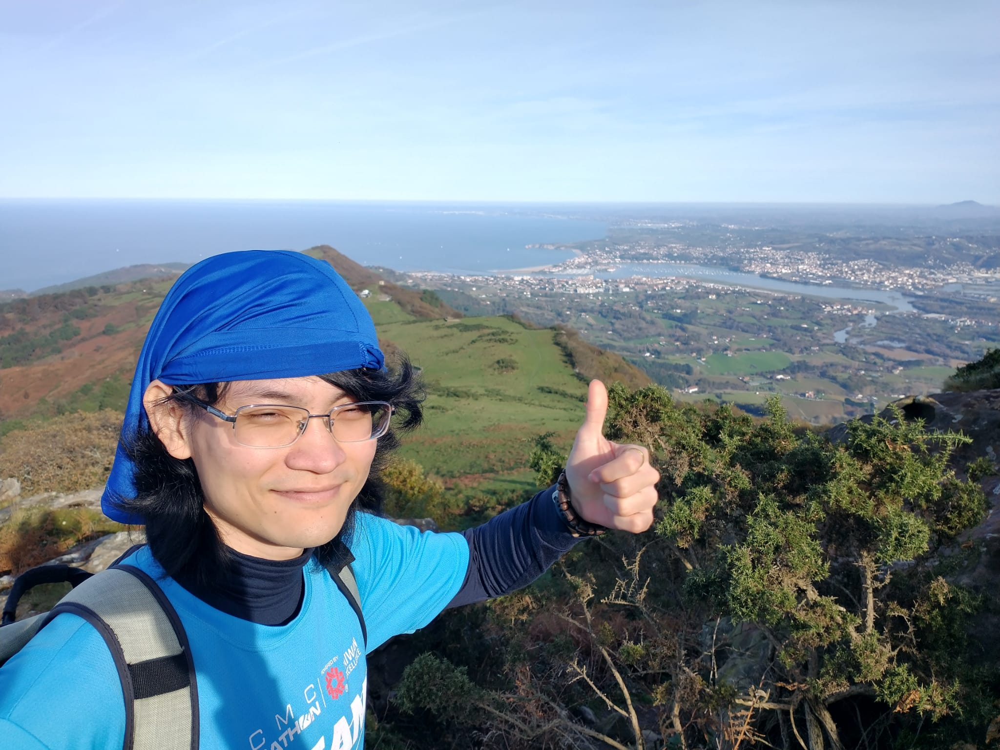

D.-H.-Minh Nguyen
Welcome to my personal website. I am a theoretical physicist who likes to travel to new places, to meet new people, and exchange new ideas.
I completed my doctoral degree at University of the Basque Country, where I focused on topological phenomena in multilayer photonic crystals and electronic wave interference in twisted bilayer graphene. Meanwhile, my Master's thesis at Tohoku University was centered at the quantum Hall effect in topological semimetals, and my bachelor research at University of Science (Ho Chi Minh City) focused on photogalvanic effects in GaAs quantum well.
Currently, my research focuses on topological phenomena and quantum geometry in condensed matter systems and photonic metamaterials.

Selected Projects
The concepts of topology and quantum geometry is generally applied to any parameter spaces that the Hamiltonian depends on. In this project, we consider the lateral shifts between different layers of multilayer systems as the additional parameters and investigate topological properties of the system in a hybrid momentum space that is composed of the real Bloch momenta and the parametric momenta. The use of these parametric dimensions not only allows one to increase the number of dimensions of the manifold but also effectively breaks the time-reversal symmetry, giving rise to nontrivial topology. For example, a 1D lattice with two additional parameters can simulate 3D topological phases, such as Weyl semimetals and 3D Chern insulators.
Traditionally, the quantum Hall effect is observed in a two-dimensional (2D) electron gas subjected to a perpendicular magnetic field. The spectrum of this system exhibits topological gaps that result in robust chiral modes at the edges of the 2D sample. Meanwhile, in a 3D electron gas, although the magnetic field still quantizes the in-plane motion of electrons, it has no effect on the out-of-plane motion that is parallel to the field. This hinders the formation of a global energy gap in the spectrum and thus prevents the observation of the quantum Hall effect. In this project, we explore exotic states that would permit the quantum Hall effect in "thick" materials.
Random Notes
Contact
Email: d.h.minh.ng[often at]gmail.com